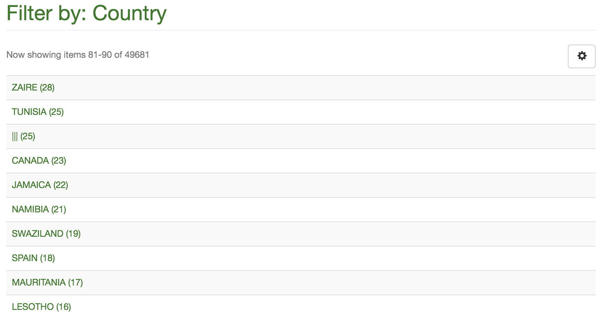

2016-02-05
- Looking at some DAGRIS data for Abenet Yabowork
- Lots of issues with spaces, newlines, etc causing the import to fail
- I noticed we have a very interesting list of countries on CGSpace:

- Not only are there 49,000 countries, we have some blanks (25)…
- Also, lots of things like “COTE D`LVOIRE” and “COTE D IVOIRE”
2016-02-06
- Found a way to get items with null/empty metadata values from SQL
- First, find the
metadata_field_idfor the field you want from themetadatafieldregistrytable:
dspacetest=# select * from metadatafieldregistry;
- In this case our country field is 78
- Now find all resources with type 2 (item) that have null/empty values for that field:
dspacetest=# select resource_id from metadatavalue where resource_type_id=2 and metadata_field_id=78 and (text_value='' OR text_value IS NULL);
- Then you can find the handle that owns it from its
resource_id:
dspacetest=# select handle from item, handle where handle.resource_id = item.item_id AND item.item_id = '22678';
- It’s 25 items so editing in the web UI is annoying, let’s try SQL!
dspacetest=# delete from metadatavalue where metadata_field_id=78 and text_value='';
DELETE 25
- After that perhaps a regular
dspace index-discovery(no -b) should suffice… - Hmm, I indexed, cleared the Cocoon cache, and restarted Tomcat but the 25 “|||” countries are still there
- Maybe I need to do a full re-index…
- Yep! The full re-index seems to work.
- Process the empty countries on CGSpace
2016-02-07
- Working on cleaning up Abenet’s DAGRIS data with OpenRefine
- I discovered two really nice functions in OpenRefine:
value.trim()andvalue.escape("javascript")which shows whitespace characters like\r\n! - For some reason when you import an Excel file into OpenRefine it exports dates like 1949 to 1949.0 in the CSV
- I re-import the resulting CSV and run a GREL on the date issued column:
value.replace("\.0", "") - I need to start running DSpace in Mac OS X instead of a Linux VM
- Install PostgreSQL from homebrew and configure:
$ postgres -D /opt/brew/var/postgres
$ createuser --pwprompt dspacetest
$ createdb -O dspacetest --encoding=UNICODE dspacetest
- After building and running a
fresh_installI symlinked the webapps into Tomcat’s webapps folder:
$ mv /opt/brew/Cellar/tomcat/8.0.30/libexec/webapps/ROOT /opt/brew/Cellar/tomcat/8.0.30/libexec/webapps/ROOT.orig
$ ln -sfv ~/dspace/webapps/xmlui /opt/brew/Cellar/tomcat/8.0.30/libexec/webapps/ROOT
$ ln -sfv ~/dspace/webapps/rest /opt/brew/Cellar/tomcat/8.0.30/libexec/webapps/rest
$ ln -sfv ~/dspace/webapps/jspui /opt/brew/Cellar/tomcat/8.0.30/libexec/webapps/jspui
$ ln -sfv ~/dspace/webapps/oai /opt/brew/Cellar/tomcat/8.0.30/libexec/webapps/oai
$ ln -sfv ~/dspace/webapps/solr /opt/brew/Cellar/tomcat/8.0.30/libexec/webapps/solr
$ /opt/brew/Cellar/tomcat/8.0.30/bin/catalina start
- Add CATALINA_OPTS in
/opt/brew/Cellar/tomcat/8.0.30/libexec/bin/setenv.sh, as this script is sourced by thecatalinastartup script - For example:
CATALINA_OPTS="-Djava.awt.headless=true -Xms2048m -Xmx2048m -XX:MaxPermSize=256m -XX:+UseConcMarkSweepGC -Dfile.encoding=UTF-8"